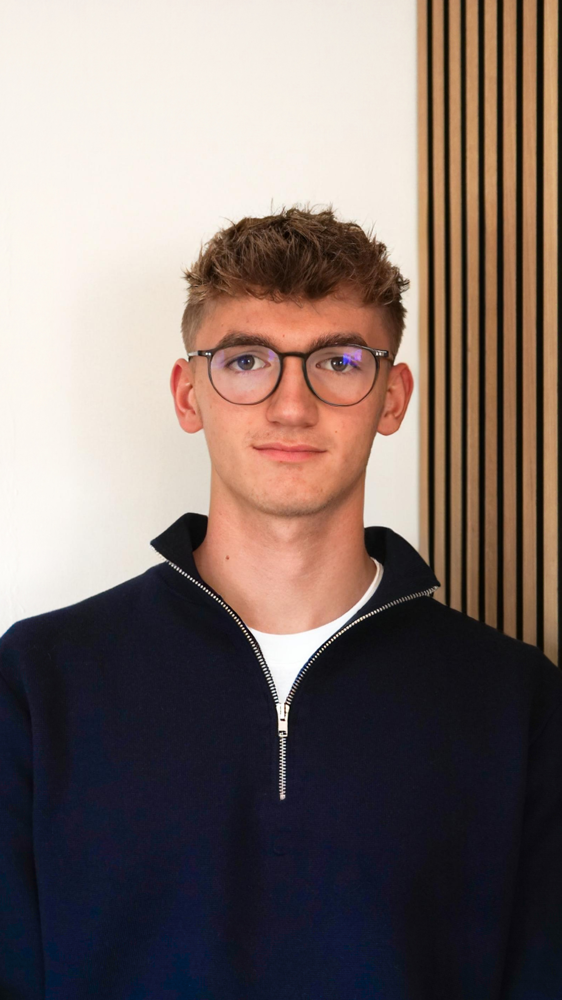

KUEHNL MEDIA
Professionelle Videoproduktion, Reels und Social-Media-Content für mittelständische Unternehmen in Gelnhausen, Hanau, Aschaffenburg und Frankfurt.
Automotive Content, der im Kopf bleibt und Eindruck hinterlässt.
Leistungen erklären.
Vertrauen schaffen.
Kunden gewinnen.
Ein Autohaus professionell in Szene gesetzt.
Das gesamte Studio in einem dynamischen Video.
Wir besprechen dein Unternehmen, deine Ziele und welche Inhalte für deine Marke sinnvoll sind.
Ich komme zu dir vor Ort und produziere professionellen Content – inklusive Dreh, Schnitt und Nachbearbeitung.
Du erhältst fertige Videos, die direkt für Social Media eingesetzt werden können.

Hi, ich bin David, 20 Jahre alt und studiere Mittelstandsmanagement an der TH Aschaffenburg.
Bereits seit meinem 15. Lebensjahr beschäftige ich mich mit Videografie, Fotografie, Design und Social Media. Seit Anfang 2026 unterstütze ich Unternehmen dabei, ihre Außenwirkung durch hochwertige Kurzvideos professionell aufzubauen.
Mein Ziel ist es, Unternehmen dabei zu helfen, mit modernen Social-Media-Inhalten Vertrauen aufzubauen, neue Mitarbeiter zu gewinnen und langfristig mehr Kunden zu erreichen.
Vereinbare jetzt dein unverbindliches Erstgespräch. Ich melde mich innerhalb von 24 Stunden.